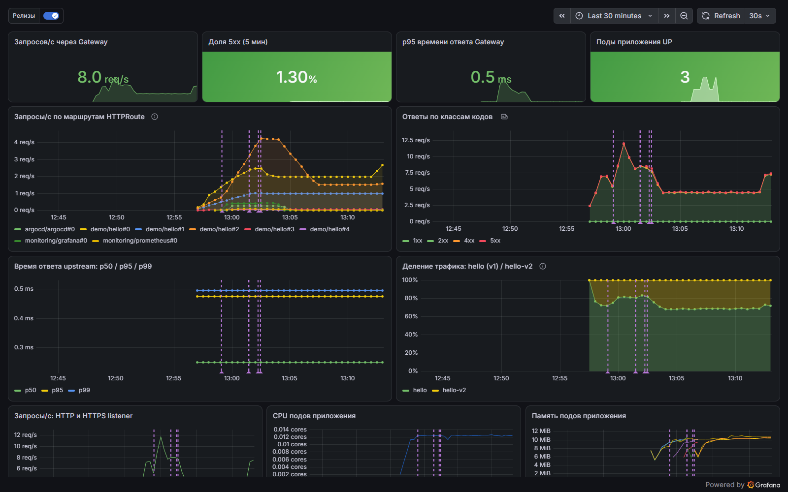
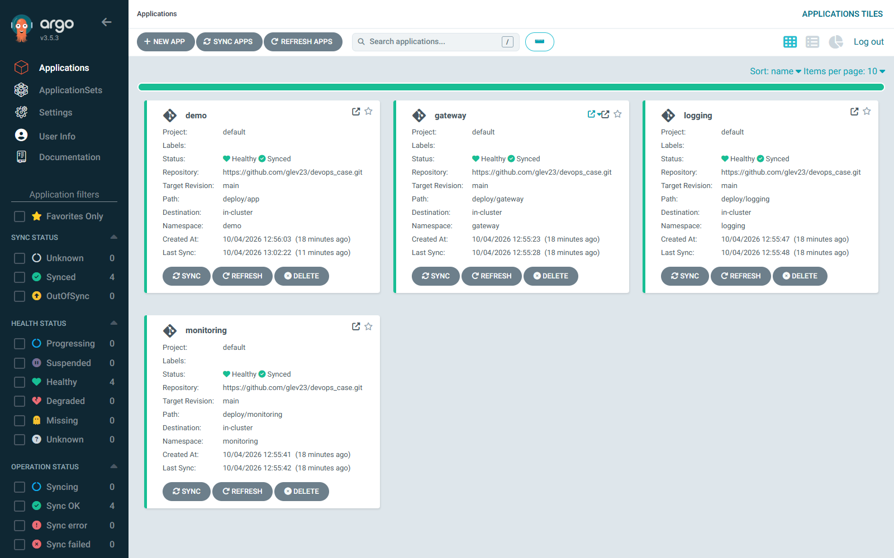

Репозиторий: https://github.com/glev23/devops_case (ветка main). Установка: sudo ./deploy.sh, проверка: make verify.
| Версия Kubernetes | 1.36.5 |
| Способ развёртывания Kubernetes | kubeadm, один узел (control plane и рабочая нагрузка), containerd 2.2.1, CNI Calico 3.32.2. Кластер создаётся с нуля кодом из репозитория на чистой ОС. |
| Реализация Gateway API | Envoy Gateway 1.9.2 (Envoy Proxy 1.39.1, CRD Gateway API 1.6.1). Ресурсы: GatewayClass, Gateway, HTTPRoute. Вход — NodePort 30080 (HTTP) и 30443 (HTTPS). |
| Инструменты автоматизации | Одна команда sudo ./deploy.sh: Ansible (подготовка ОС, kubeadm, CNI) → Helm (сторонние компоненты, версии закреплены) → Kustomize (собственные манифесты) → Argo CD (доставка манифестов из Git). Makefile, GitHub Actions. |
| Инструмент логирования | Fluentd 1.19 (DaemonSet) → Loki 3.6 → Grafana. |
| Способ развёртывания Prometheus | Helm-чарт kube-prometheus-stack 91.8.2: Prometheus 3.15 (Prometheus Operator), Alertmanager, Grafana 13.2, node-exporter, kube-state-metrics. |
| ОС тестирования | Ubuntu 24.04 LTS: VM 4 vCPU / 8 ГБ (установка с чистого образа) и раннер GitHub Actions ubuntu-24.04 — установка с нуля на каждый коммит. |
Сплошная синяя линия — путь запроса: Пользователь → Gateway API → приложение. Пунктир — телеметрия (метрики, логи, трейсы). UI Grafana, Prometheus и Argo CD опубликованы через тот же Gateway по hostname *.devops.test.


main репозитория (стенд после установки по README на чистой Ubuntu 24.04).| Пункт | Как реализован | Обоснование | Как проверить |
|---|---|---|---|
| 1. Kubernetes | kubeadm 1.36.5 на одном узле, containerd, Calico. Ansible готовит ОС (swap, модули ядра, sysctl), выполняет kubeadm init. Адрес узла закреплён на dummy-интерфейсе 10.200.0.10. |
kubeadm — приоритет кейса. Версия 1.36 входит в матрицы совместимости Calico 3.32 и Envoy Gateway 1.9. Calico даёт NetworkPolicy. Стабильный адрес: кластер переживает смену IP по DHCP. | kubectl get nodes -o wide → Ready, v1.36.5; первая группа проверок make verify. |
| 2. Веб-приложение | nginx 1.30.5 (официальный образ nginx-unprivileged), конфигурация — ConfigMap. Ответ Hello World! from <pod>, access-лог в JSON в stdout, error-лог в stderr. 2 реплики. |
Публичный образ без собственной сборки. Имя пода в ответе показывает балансировку и распределение по весам. JSON-лог разбирается в поля без регулярных выражений. | curl http://<IP>:30080/ → Hello World! from hello-… |
| 3. Gateway API | Envoy Gateway 1.9.2 (Helm). GatewayClass eg → Gateway gateway/main (HTTP, HTTPS) → HTTPRoute demo/hello → Service hello. Прокси опубликован через NodePort 30080/30443. |
Реализация создана под Gateway API: веса, TLS, hostname и path — стандартными полями. Метрики Envoy по маршрутам. NodePort вместо LoadBalancer: не зависит от сети эксперта и облака. | kubectl get gatewayclass,gateway,httproute -A; curl -i http://<IP>:30080/ → 200, заголовок x-backend: v1 добавлен фильтром HTTPRoute. |
| 4. Мониторинг | kube-prometheus-stack. Targets: nginx (sidecar-экспортер), Envoy, узел, kubelet/cAdvisor, control plane, kube-state-metrics, компоненты решения — 23 job, все UP. |
Один чарт даёт Operator (ServiceMonitor/PodMonitor как код), метрики CPU/RAM, Grafana с дашбордами и Alertmanager. | PromQL up{job="hello"} → 1; count(up == 0) → 0; sum(nginx_http_requests_total) > 0. Команды — README, раздел 6. |
| 5. Логирование | Fluentd (DaemonSet) читает /var/log/containers/*.log всех подов, добавляет метки namespace/pod/container, разбирает JSON nginx и пишет в Loki (72 ч). Просмотр — Grafana, LogQL. |
Кейс требует Fluentd или Filebeat. Loki вместо Elasticsearch: укладывается в 8 ГБ RAM рядом с Prometheus и даёт одно окно Grafana для метрик и логов. | Запрос curl "http://<IP>:30080/?trace=check-123", затем LogQL {namespace="demo",container="nginx"} |= "check-123" — запись найдена (README, раздел 6). |
| 6. Ubuntu 24.04 | Установка с чистого образа Ubuntu 24.04.5 (VM) и на раннере GitHub ubuntu-24.04. |
Раннер GitHub — полноценная VM: CI проверяет тот же сценарий, что выполняет эксперт. | Бейдж CI в README, job e2e. |
| 7. Автоматизация | sudo ./deploy.sh — единственная команда: ставит Ansible и выполняет playbook. Версии закреплены в одном файле. Повторный запуск — changed=0. destroy.sh — переустановка. |
Ansible покрывает и ОС, и кластер; идемпотентность видна по итоговой строке. Helm — для сторонних чартов, Kustomize — для своих манифестов. | Повторить sudo ./deploy.sh → changed=0 failed=0. В CI job падает, если changed ≠ 0. |
| 8. Документация | README: архитектура со схемами, версии, требования, пошаговая установка, автоматические и ручные проверки, ограничения. | Каждая заявленная возможность имеет команду проверки с ожидаемым результатом. | make verify (около 50 проверок), make demo (сценарий из 9 шагов). |
<IP> — адрес узла: hostname -I | awk '{print $1}'. Все ручные команды с ожидаемым выводом приведены в README, раздел 6.
| Что реализовано | Как технически реализовано | Обоснование | Как проверить |
|---|---|---|---|
| Расширенный Gateway API | Маршруты по path (/v2, /canary, /error, /limited) и hostname (grafana/prometheus/argocd.devops.test); два backend, traffic splitting 80/20; URLRewrite, ResponseHeaderModifier; HTTPS-listener, сертификат выпускает cert-manager из собственного CA. |
Только стандартные поля Gateway API. Ключи TLS создаются в кластере и не попадают в репозиторий. | curl …/v2; 20 запросов к /canary → ~80/20; curl --cacert ca.crt https://hello.devops.test:30443/ без -k. |
| Политики трафика | BackendTrafficPolicy: таймауты, ретраи на сетевые сбои, circuit breaker, rate limit 5 запросов/с. ClientTrafficPolicy: таймауты клиента, лимит соединений. SecurityPolicy: basic auth для Prometheus. |
Защита приложения от перегрузки и «зависших» соединений на уровне шлюза, без изменения приложения. | 15 запросов к /limited → 5 × 200, 10 × 429. Prometheus без пароля → 401. |
| HTTP-метрики, алерты, дашборды | Метрики Envoy по каждому правилу HTTPRoute: запросы, коды, p50/p95/p99. 9 правил алертов (PrometheusRule), два собственных дашборда Grafana (JSON в репозитории), генератор фоновой нагрузки. |
Метрики снимаются со шлюза — покрывают любое приложение за ним. Графики заполнены сразу после установки. | PromQL route:envoy_upstream_rq:rate5m; дашборд «Gateway и приложение». |
| SLO | SLI — доля ответов не-5xx, цель 99,9%, бюджет ошибок, burn-rate алерты по двум окнам (14,4× и 6×), дашборд SLO. Правила записаны вручную. | Алерт по скорости расхода бюджета, а не по порогу: меньше ложных срабатываний. Формулы прозрачны для проверки. | PromQL slo:sli:availability_3d; дашборд «SLO доступности». |
| Логи всего кластера и трейсинг | В Loki — логи всех контейнеров кластера. Envoy отправляет трейсы в Tempo (OTLP); traceparent пишется в лог nginx; в Grafana — переход от строки лога к трейсу и обратно. |
Три сигнала (метрики, логи, трейсы) связаны и доступны в одном окне; Envoy шлёт спаны напрямую, без отдельного коллектора. | make demo, шаг 5: один запрос — его лог в Loki и трейс в Tempo. |
| GitOps (CD) | Argo CD синхронизирует каталоги deploy/* с веткой main: automated, prune, selfHeal. Изменение в Git применяется в кластере примерно за 1,5 минуты. |
Pull-модель: кластеру за NAT не нужны входящие подключения и секреты CI. Режим без GitOps сохранён (-e gitops_enabled=false). |
kubectl -n argocd get applications → Synced/Healthy; UI Argo CD. |
| Canary-релизы с автооткатом | Argo Rollouts с плагином Gateway API: 10 → 30 → 60 → 100% через веса HTTPRoute; фоновый анализ доли 5xx в Prometheus (порог 2%). | Решение о релизе принимают метрики, а не человек. Используются те же веса Gateway API и тот же Prometheus. | make release-bad — откат за ~40 с; make release-good — 100% за ~2,5 мин. |
| CI/CD | GitHub Actions: yamllint, ansible-lint (production), shellcheck, kubeconform, gitleaks; e2e — kubeadm с нуля на ubuntu-24.04, повтор с changed=0, verify, demo, плохой и хороший релиз (~13 мин). |
Воспроизводимость и идемпотентность доказываются на каждом коммите тем же сценарием, что у эксперта. | Бейдж CI и вкладка Actions репозитория. |
| Надёжность и безопасность | NetworkPolicy (default deny в demo), PDB, 2 реплики, пробы, requests/limits; non-root, read-only rootfs, drop ALL, seccomp; пароли генерируются при установке и хранятся только в Secret; версии и digest закреплены. |
Базовые практики эксплуатации; в репозитории нет секретов (проверяет gitleaks по всей истории). | make verify, раздел «Безопасность»: под из чужого namespace не достигает приложения. |
changed=0 и выполняет около 50 проверок. Метрики, логи и трейсы одного запроса связаны между собой и доступны в одной Grafana. Те же метрики автоматически управляют релизом: версия с ошибками откатывается без участия человека.10.200.0.10 на dummy-интерфейсе, к которому привязаны API-сервер, kubelet и Calico, а внешний доступ идёт через NodePort на любом адресе узла.| Что добавить | Что это даёт | Что необходимо |
|---|---|---|
| Отказоустойчивый кластер: 3 узла control plane, рабочие узлы, kube-vip | Устранение единой точки отказа; обновление без простоя | Не менее 3 узлов (VM или серверы) |
| Постоянное хранилище: Longhorn/Ceph, объектное хранилище для Loki, Tempo, Thanos | Сохранность метрик, логов и трейсов; окно SLO 30 дней вместо 3 | Диски узлов или S3-совместимое хранилище (MinIO — без платных сервисов) |
| Service типа LoadBalancer: MetalLB или Calico BGP | Стандартные порты 80/443 и анонс адресов сервисов в сеть | Выделенный пул IP; для BGP — пиринг с маршрутизаторами |
| Оповещения и секреты: маршруты Alertmanager, External Secrets + Vault, проверка подписи образов | Доставка алертов дежурной смене; ротация секретов; контроль цепочки поставки | Канал оповещений (почта, мессенджер, webhook), Vault |
| Офлайн-установка: локальный реестр образов и зеркало пакетов | Развёртывание в закрытом контуре без доступа в интернет | Сервер реестра и зеркала в контуре |
| Телеком: сетевые функции (CNF) — Multus, SR-IOV, DPDK, CPU pinning, HugePages | Производительность пользовательской плоскости (например, UPF 5G) в Kubernetes | Серверы с сетевыми картами SR-IOV, настройка NUMA |
Телеком: GRPCRoute, TLSRoute, mTLS между сервисами | Публикация сигнальных интерфейсов 5G SBI (HTTP/2) через тот же Gateway API с взаимной аутентификацией сетевых функций | PKI оператора; расширение политик Envoy Gateway |
| Телеком: множество edge-площадок — Argo CD ApplicationSet | Единообразная доставка на сотни узлов доступа; pull-модель уже работает через NAT | Управляющий кластер, каналы до площадок |
| Телеком: точное время (PTP) и интеграция с NOC | Синхронизация для RAN; передача алертов в системы мониторинга оператора (SNMP, webhook) | Оборудование с поддержкой PTP; приёмник событий |
Один узел (нет отказоустойчивости); данные наблюдаемости хранятся в emptyDir (3 дня, без StorageClass); только x86_64; для установки нужен доступ в интернет; UI доступны по hostname — для браузера нужна запись в hosts. Полный список — README, раздел 11.